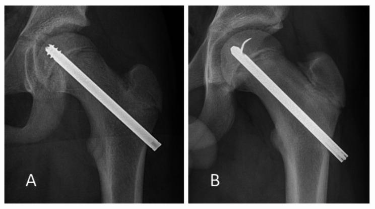
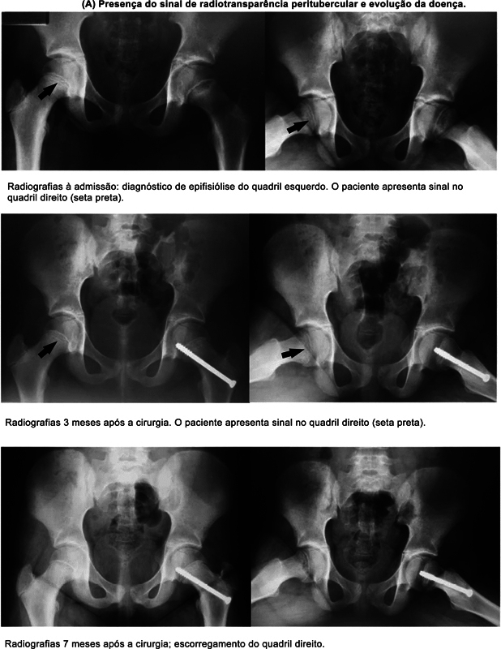

Quadril do adolescente
Um escorregamento da cabeça do fêmur que acontece na fase de crescimento. Muitas vezes começa com dor no joelho, e por isso pode demorar a ser reconhecido.
Entendendo
No adolescente, a cabeça do fêmur (a "bola" do quadril) ainda está presa ao resto do osso por uma placa de cartilagem, a placa de crescimento (fise). Na epifisiólise, essa placa cede e a cabeça do fêmur escorrega para trás e para baixo em relação ao colo do fêmur (o "pescoço" que liga a bola ao resto do osso). O nome técnico é epifisiólise proximal do fêmur, ou escorregamento epifisário da cabeça do fêmur.
É uma doença do adolescente. Uma revisão de 15 estudos, com 5.467 pacientes, centrada em crianças com obesidade, encontrou idade média de 12 anos ao diagnóstico, mais casos em meninos que em meninas e uma incidência média de cerca de 10 casos por 100 mil crianças, com grande variação entre países1. Nos Estados Unidos, a incidência mais que dobrou entre 2011 e 2020, acompanhando o aumento da obesidade infantil2. O excesso de peso é um fator de risco, e não uma culpa: a conduta é cuidar do quadril e, junto, da saúde da criança.
Para os pais
Dor no joelho em adolescente nem sempre vem do joelho. O quadril pode "irradiar" a dor para a coxa e para o joelho.
Num estudo com 290 pacientes, quem chegou com dor no joelho esperou em média cerca de três meses a mais pela radiografia do quadril que quem chegou com dor no quadril, e teve mais complicações depois4. Por isso, na consulta, vale contar se a dor também aparece na virilha ou na coxa e se o adolescente tem mancado: são informações que ajudam o médico a avaliar o quadril.
Gravidade
O adolescente consegue apoiar o peso na perna, mesmo mancando ou com muletas.
Não consegue apoiar a perna nem com muletas. É uma urgência, porque o escorregamento pode prejudicar a circulação da cabeça do fêmur.
Essa divisão foi proposta em 1993, num estudo clássico: entre os quadris instáveis, quase metade (14 de 30) evoluiu com necrose avascular (morte do osso por falta de circulação), e nenhum dos estáveis5. Uma metanálise (estudo que reúne os resultados de vários estudos) mais recente, com 434 quadris instáveis, estimou essa complicação em cerca de 24%6.
Tratamento
O tratamento é cirúrgico1. O objetivo é impedir que a cabeça do fêmur continue escorregando.
"In situ" quer dizer "no lugar": o quadril é fixado na posição em que está, com um parafuso que atravessa a placa de crescimento, por um corte pequeno. Numa revisão de 207 artigos publicados entre 1993 e 2021, o parafuso único do tipo canulado (oco por dentro, colocado guiado por um fio) tornou-se o implante de escolha para os casos estáveis7.

Em escorregamentos mais graves, existe uma cirurgia maior, chamada Dunn modificado: o quadril é aberto com cuidado para preservar os vasos, e a cabeça do fêmur é recolocada na posição correta. Uma metanálise com 688 quadris encontrou necrose avascular em cerca de 14% depois dessa cirurgia (cerca de 11% nos estáveis e 20% nos instáveis)9. Comparada à fixação in situ, uma revisão de estudos ainda limitados mostrou melhor formato do quadril na radiografia, sem diferença clínica demonstrada, e recomendou que seja feita em centros com experiência8. A escolha da técnica depende de cada caso e é decisão do médico assistente, conversada com a família.
O outro lado
A epifisiólise pode aparecer depois no quadril que estava bom. Numa revisão de 26 estudos, com quase 13 mil pacientes, 14% tiveram escorregamento do outro lado com sintomas, e outros 38% tiveram escorregamento sem sintomas3. O risco é maior quanto mais jovem a criança11.
Por isso, em alguns pacientes, o médico propõe fixar também o lado são de forma preventiva (fixação profilática). As revisões indicam que, em geral, as vantagens parecem superar as desvantagens, mas que a decisão deve ser individual3,10.
Pesquisa com participação do Dr. Renan
Um estudo do Hospital Infantil Joana de Gusmão, em Florianópolis, do qual o Dr. Renan é coautor, analisou 115 pacientes com epifisiólise de um lado. Procurou-se, na radiografia do quadril ainda sadio, uma pequena área mais clara junto à placa de crescimento. Dos 30 que escorregaram depois do outro lado, 21 já tinham esse sinal, visto em média cerca de 301 dias antes do escorregamento12. Os autores o propõem como ferramenta complementar na decisão sobre o outro quadril. É um estudo de um único centro.

Esse tema segue em estudo: no mestrado em Ciências Médicas da UFSC, o Dr. Renan pesquisa a deformidade que fica no quadril depois que a placa de crescimento se fecha nos pacientes que tiveram epifisiólise.
Depois do crescimento
Mesmo depois de tratado, o quadril pode ficar com o colo do fêmur com um formato diferente. Esse "degrau" pode encostar na borda do acetábulo (a "concha" da bacia onde a bola se encaixa) em movimentos como agachar, o que se chama impacto femoroacetabular. Num estudo, adultos jovens com sequela de epifisiólise e dor tinham deformidade maior e já mostravam lesão de cartilagem, em idade mais jovem que os pacientes com impacto sem esse histórico13. Até no lado fixado de forma preventiva, um estudo com pelo menos 10 anos de seguimento encontrou essa deformidade em 30% dos quadris, sem artrose nesse período14.
Por isso o acompanhamento costuma continuar depois da cirurgia, e dor que aparece anos depois merece reavaliação.
Informação educativa. Não substitui a consulta: cada caso é avaliado individualmente, e a conduta é decisão do médico assistente.
← Voltar à página inicial